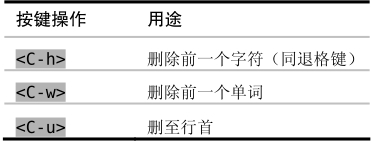

技巧13在插入模式中可即时更正错误
如果在插入模式下撰写文本时出了错，我们可以立刻对它进行更正，而无需切换模式。要迅速更正错误，除了用退格键外，我们还可以用插入模式中的其他一些命令。
盲打并不仅仅指输入时不看键盘，还意味着输入时要凭感觉。当盲打的人输入错误时，在眼睛看到屏幕上的错误之前，他们就已经察觉到了，他们可以用手指感知到次序颠倒这类的错误。
在输入错误时，我们可以用退格键删除错误的文本，然后再输入正确的内容。如果出错的地方靠近单词结尾，这或许是最快的修正方式。但是，如果出错的位置在单词开头呢？
专业打字员会建议先删除整个单词，然后再重新输入一遍。如果你能以每分钟超过60个单词的速度输入，那么重新输入一个词只需要1秒钟的时间。即便你打不了这么快，最好也采用这种方式。我以前总是输错某些特定的词，但自从采纳这一建议后，我就更清楚地意识到哪些词会让我犯错，因此现在犯的错也少了很多。
另外，你也可以切换到普通模式，然后跳到这个词的开头并更正错误，再按 A 返回刚才的位置。不过完成这一套动作要花的时间可能不止1秒钟，并且它也无助于提高你的盲打技巧。虽然说我们可以切换模式，不过这并不意味着一定就得切换。
在插入模式下，退格键的作用如你所愿，它删除光标前的字符。另外，我们还可以用下面这些组合键：

这些命令不是插入模式所独有的，甚至也不是Vim所独有的，在Vim的命令行模式中，以及在 bash shell中，也可以使用它们。